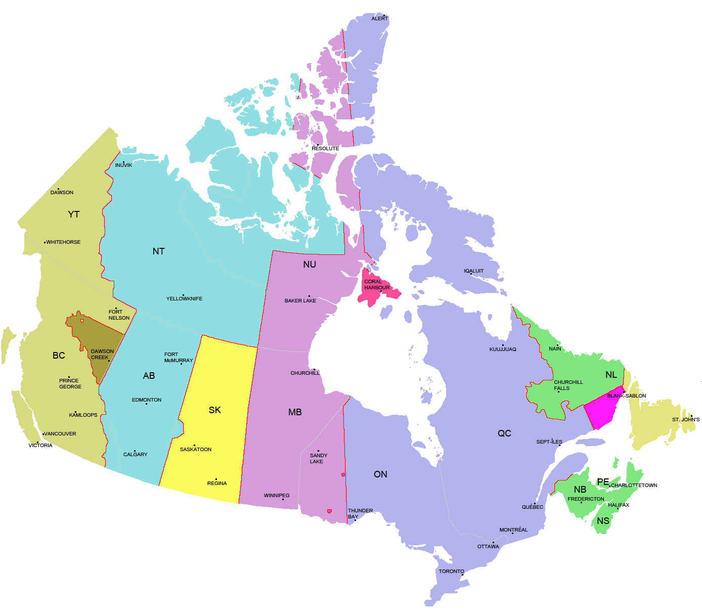

Canadian Map
Guide!
Click on the provinces name (For EX: BC, AB, SK, etc.)
to be directed to the information about that province.
Please click exactly on the name!

British Columbia (BC; capital: Vancouver)
British Columbia (BC or B.C.; French: Colombie-Britannique) is the westernmost province of Canada, located between the Pacific Ocean and the Rocky Mountains. With an estimated population of 4.8 million as of 2017, it is Canada's third-most populous province. BC's economy is diverse, with service producing industries accounting for the largest portion of the province's GDP.[12] It is the terminus of two transcontinental railways, and the site of 27 major marine cargo and passenger terminals. Though less than 5% of its vast 944,735 km2 (364,764 sq mi) land is arable, the province is agriculturally rich (particularly in the Fraser and Okanagan valleys), because of milder weather near the coast and in certain sheltered southern valleys. Its climate encourages outdoor recreation and tourism, though its economic mainstay has long been resource extraction, principally logging, farming, and mining. Vancouver, the province's largest city, serves as the headquarters of many western-based natural resource companies. It also benefits from a strong housing market and a per capita income well above the national average. While the coast of British Columbia and some valleys in the south-central part of the province have mild weather, the majority of its land mass experiences a cold-winter-temperate climate similar to the rest of Canada. The Northern Interior region has a subarctic climate with very cold winters. The climate of Vancouver is by far the mildest winter climate of the major Canadian cities, with nighttime January temperatures averaging above the freezing point.For more information look at the screen below!
Alberta (AB; capital: Edmonton)
Alberta is a western province of Canada. With an estimated population of 4,067,175 as of 2016 census,[1] it is Canada's fourth-most populous province and the most populous of Canada's three prairie provinces. Its area is about 660,000 square kilometres (250,000 sq mi). Alberta and its neighbour Saskatchewan were districts of the Northwest Territories until they were established as provinces on September 1, 1905.[5] The premier has been Rachel Notley since May 2015. Alberta is bounded by the provinces of British Columbia to the west and Saskatchewan to the east, the Northwest Territories to the north, and the U.S. state of Montana to the south. Alberta is one of three Canadian provinces and territories to border only a single U.S. state and one of only two landlocked provinces. It has a predominantly humid continental climate, with stark contrasts over a year; but seasonal temperature average swings are smaller than in areas further east, due to winters being warmed by occasional chinook winds bringing sudden warming.
Saskatchewan (SK; capital: Regina)
Saskatchewan is a prairie and boreal province in western Canada, the only province without natural borders. It has an area of 651,900 square kilometres (251,700 sq mi), nearly 10 percent of which (59,366 square kilometres (22,900 sq mi)) is fresh water, composed mostly of rivers, reservoirs, and the province's 100,000 lakes.Saskatchewan is a landlocked province with large distances to moderating bodies of waters. As a result, its climate is extremely continental, rendering severe winters throughout the province. Southern areas have very warm or hot summers. Midale and Yellow Grass near the U.S. border are tied for the highest ever recorded temperatures in Canada with 45 °C (113 °F) observed at both locations on July 5, 1937.[9][10] In winter, temperatures below −45 °C (−49 °F) are possible even in the south during extreme cold snaps. Saskatchewan has been inhabited for thousands of years by various indigenous groups, and first explored by Europeans in 1690 and settled in 1774. It became a province in 1905, carved out from the vast North-West Territories, which had until then included most of the Canadian Prairies. In the early 20th century the province became known as a stronghold for Canadian social democracy; North America's first social-democratic government was elected in 1944. The province's economy is based on agriculture, mining, and energy. Saskatchewan's current premier is Scott Moe and its lieutenant-governor is Vaughn Solomon Schofield.